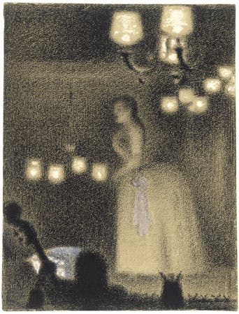

Georges Seurat is chiefly remembered as the pioneer of the Neo-impressionist technique commonly known as Divisionism, or Pointillism, an approach associated with a softly flickering surface of small dots or strokes of color. His innovations derived from new quasi-scientific theories about color and expression, yet the graceful beauty of his work is explained by the influence of very different sources.
Initially, he believed that great modern art would show contemporary life in ways similar to classical art, except that it would use technologically informed techniques. Later he grew more interested in Gothic art and popular posters, and the influence of these on his work make it some of the first modern art to make use of such unconventional sources for expression. His success quickly propelled him to the forefront of the Parisian avant-garde.